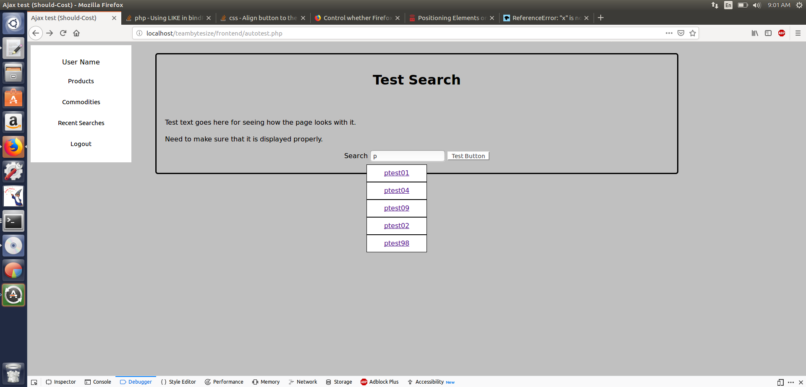

I haven't been working as much on this, as people can probably tell. Other things have occupied my mind - job-hunting and school, mostly. When I've had time I've been reviewing Javascript, which is probably my weakest language and one that I need a better grasp on.
I now understand how to query a database on user input more effectively. I have not yet managed to make it look pretty. (This is the kind of thing that I really thought would be easy to find tutorials for, since there are so many sites that have search bars that autofill.

The important thing for the moment is creating a way to query the database after typing a letter, instead of querying it before and having the database ready to go. Right now the database is small and everything starts with the same letter, but once I start testing it with actual varied data, this will scale much more efficiently.
There are security issues - the same that you get with most GET queries, I find, because if someone knows the name of a database table, they can use the queries to search for whatever they want by typing in the HTML manually. Very likely I will make the search page only recognize certain tables. I definitely don't want people to be able to pull passwords from the user table.
I'll get the CSS right later.
(My test page is not currently requiring a password, mostly for ease of use. That will change.)